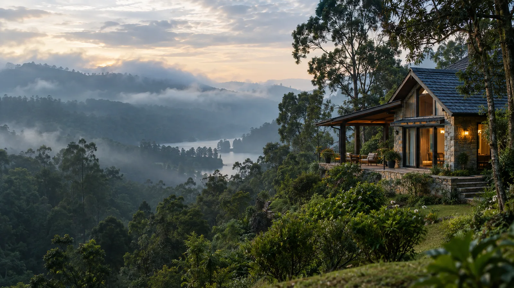

Kodai Road Station to Batlagundu
A short, flat run away from the station — the quickest stretch of the drive, and an easy place to make up a few minutes if your train arrives late.
KODAI ROAD KODAIKANAL
The easiest way to cover the 80 km from the station — private cab, door-to-door, on your own schedule.

Plan Your Visit
The route is drivable year-round, but the season changes what you'll see on the ghat and how the road feels underway.
KODAI ROAD KODAIKANAL
The Distance
By road, Kodai Road railway station and Kodaikanal sit about 80 km apart, most of it flat road running through Batlagundu before the road turns uphill. The final stretch is the ghat section — around 20 km of switchbacks that gain most of Kodaikanal's 2,100 metre elevation in one go, which is why the last leg feels longer than the distance suggests, even on this shorter route.
On the Road
Typical road journey: 2.5–3 hours
A non-stop run in a private cab takes about 2.5 to 3 hours. Add a breakfast break near Batlagundu or a photo stop on the ghat road and it stretches closer to 3.5 hours. Trains that arrive early morning usually mean the cleanest run up the ghat, before it gets busy with tourist traffic later in the day.
The Journey
One road covers the whole trip, but it changes character twice — flat plains near the station, then a mountain climb into Kodaikanal itself.
A short, flat run away from the station — the quickest stretch of the drive, and an easy place to make up a few minutes if your train arrives late.
The land starts to fold into hills here — a good stretch for a quick breakfast stop before the road narrows and starts climbing.
Roughly 20 km of hairpin bends climbing through forest, gaining most of Kodaikanal's elevation — this is where a driver who knows the road matters most.
The ghat road opens out near Kodaikanal Lake, and your cab drops you directly at your cottage or hotel door.


 Flat Roads
Flat Roads
Fare Sheet
Kodai Road → Kodaikanal, one-way starting fares by vehicle model. Round trip and multi-day rates are quoted separately once we know your dates.
Toll and hill-station entry charges, if any, are added at actuals.
Book in Minutes
Two Ways to Book
Best for:
Train travellers who only need the drop to Kodaikanal, and will return a different way or on a later date.
Best for:
Guests keeping the same cab and driver for the whole trip, with a fixed return date and train back — usually the better rate per kilometre.

Step Off the Train, Drive Up
Yes — Kodai Road (Kodaikanal Road) railway station, near Ambathurai, is our most common pickup point since it's the nearest railhead to Kodaikanal. Your driver tracks your train, so a delay doesn't mean a missed pickup.
Beyond the Transfer
Yes — combine your cab with stay and sightseeing, from a single-day transfer-and-tour to a full three-day trip.
Day
↓
Transfer + Sightseeing
Days
↓
Transfer + Stay + Sightseeing
Days
↓
Transfer + Stay + Sightseeing
Most Booked
Transfer from Kodai Road station, one night's stay, and a full day covering the lake, Coaker's Walk and Pillar Rocks — the pace most first-time train travellers prefer.
2-day and 3-day package rates are quoted per vehicle type — Etios, Innova, Tavera, Tempo or Coach — since pricing varies with vehicle and vehicle capacity restrictions apply. Share your group size for an exact quote.
Get a Vehicle-Wise Package Quote
A Day in Kodaikanal
Yes — the same cab that brings you in from the station can spend a full day on local sightseeing, at your pace rather than a fixed tour schedule.
A slow lap around the star-shaped lake, ideal while the morning mist is still thinning over the water.
A short cliffside walk with valley views on a clear day.
Your driver waits while you eat — no need to rush a meal to stay on schedule.
Three granite cliffs rising straight out of the forest — one of Kodaikanal's most photographed viewpoints.

A roadside waterfall on the ghat descent, an easy stop for a quick photo without adding much to the drive.
A short walk from the road through forest to a smaller, quieter waterfall just outside town.
A last stop before the light fades — the widest open view on the route back into town.
Once You're There
A short list of the stops most cab itineraries build around, from the lake at the centre of town to the quieter viewpoints just outside it.
Recommended First Stop
Kodaikanal Lake
The star-shaped lake at the centre of town, best walked in the early morning light.
Coaker's Walk
A cliffside path with clear-day valley views, an easy 15-minute stop.
Pillar Rocks
Three sheer granite cliffs, one of the most photographed spots in the hills.
Pine Forest
Quiet forest trails near Vattakanal, a short detour from the main sightseeing loop.
Recommended Last Stop
Bryant Park
Manicured gardens in the town centre, an easy add-on before heading back.
Why a Cab
Direct from the station platform
Flexible departure time
Comfortable, checked vehicles
Family-friendly journey
Suited to group travel
Flexible sightseeing stops
Early-morning and late-night arrivals or departures accommodated
Questions
01 · Distance
01How far is Kodai Road from Kodaikanal?
The road distance is about 80 km via Batlagundu, which takes roughly 2.5 to 3 hours by cab depending on traffic and the ghat road.
02Which towns does the route pass through?
The drive runs through Batlagundu, the main midway town before the ghat climb into Kodaikanal.
02 · Journey
03How long does the journey take?
Typically 2.5 to 3 hours non-stop. With a breakfast or photo stop, plan for closer to 3.5 hours.
04Is the ghat road safe at night?
It's driveable, but we recommend arriving before dusk where possible — the hairpin bends are easier to judge in daylight.
03 · Fare
05How much does the cab cost?
Fares start around ₹2,500 for an Etios, ₹3,800–₹4,000 for a Tavera or Innova, ₹5,000 for a Tempo, and ₹5,500 for a Coach, depending on your travel date.
06Is the fare different for a round trip?
Yes — round trips are usually a better per-kilometre rate since the same cab and driver stay with you for the return leg too.
07Are tolls included in the price?
Tolls and any hill-station entry charges are added at actuals and confirmed clearly before you book, not added as a surprise later.
04 · Booking
08How do I book a cab?
Share your train number, expected arrival time and preferred vehicle over WhatsApp or by phone, and we confirm your driver and fare the same day.
09How far in advance should I book?
A day's notice is usually enough, though weekends and festival periods are safer booked a few days ahead.
05 · Station
10Is railway station pickup available?
Yes — Kodai Road (Kodaikanal Road) railway station is our most common pickup point, with drivers tracking your train.
11What if my train is delayed?
Your driver tracks the train status and adjusts pickup time accordingly, at no extra charge for reasonable delays.
06 · Vehicles
12What vehicles are available?
Sedans for up to 4 passengers, SUVs or Innovas for up to 7, and tempo travellers for groups of 9 to 17.
13Which vehicle is best for hill roads?
SUVs handle the ghat bends most comfortably for families or anyone prone to motion sickness, though sedans manage the route fine too.
07 · Packages
14Can I book a multi-day package?
Yes — one, two and three day packages combine your Kodai Road transfer with stay and sightseeing in Kodaikanal.
15What's included in the 2-day package?
Your transfer from Kodai Road station, one night's stay, and a full day of sightseeing covering the lake, Coaker's Walk and Pillar Rocks.
16Can the package be customized?
Yes — tell us your group size, preferred stay and the sights you want included, and we'll adjust the package before booking.
One Last Step
Kodai Road → Kodaikanal
One-way • Round-trip • Station Pickup
Book Your Cab